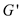
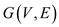
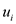
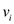

Triangle Inequality
According to triangle inequality the sum of the length of two sides of a triangle must be greater than the third side. If this condition is true for any triangle then the triangle follows the inequality.
It states that:
or
or
Travelling salesman problem: The travelling salesman problem follows the triangular inequality. It is the problem in which a salesman in a city travels to the other cities for selling his products without repeating any city twice except the city from where he has started his tour. There is fixed cost incurred for travelling from one city to the other city.
It can be represented using a graph G (V,
E) in which V is the number of nodes which represents
the number of cities the salesman visits. The number of edges
E of the graph are representing the r out that is
followed by the salesman. The cost for any route from u to
v is  which is
shown on the edges of the graph. The graph showing the travelling
salesman problem is as:
which is
shown on the edges of the graph. The graph showing the travelling
salesman problem is as:
In the above graph it is shown that the salesman starts his tour from city a he goes to the city b from there he goes forward to c, d, e and f after thathe came back to city a. The cost of each route is shown on the respective edges.
Metric Travelling salesman problem: This is the TSP which follows triangular inequality, and minimum cost is incurred while visiting each vertex single time. According to metric travelling salesman problem the cost elapsed for travelling from one city to other is less than that cost if he follows any indirect route.
For example: The cost of going from u to v will be lesser than the cost incurred when he goes from u to w and then from w to v. This shows the inequality because the sum of cost incurred in the indirect path is greater than the cost in the direst path. That is the sum of two sides of triangle is greater than one side.
The algorithm to solve the metric TSP is as:
Algorithm:
// A MST is a spanning tree which has minimum weight of all the spanning trees.
1. Find minimum spanning tree from G.
// increase every edge of MST to get a eulerian graph.
2. Increase each of the minimum spanning trees to get an Eulerian graph 
// Eulerian circuit is a path which each vertex only once and start and it is trailing on
// same vertex.
3. Find out Eulerian circuit E from.
4. Output the vertices of  as found
out in
as found
out in .
.
In the above algorithm first step is to find the minimum spanning tree (MST) for the graph. The minimum spanning tree is the graph without any cycle such that it can cover all the vertices of the graph and its weight or cost is lesser than all other spanning trees for the same graph.
After that is finds the Euler graph for the MST, for finding the Euler graph it extends the edges of MST. Euler graph is the one that contains the Euler cycle and Euler cycle is path which contains each edge of the graph exactly once. Now, the Euler circuit for the graph is calculated which is the path in which each vertex is added only once accept the starting vertex which is also the ending vertex.
TSP WITH THREE VERTICES: Consider the graph with three vertices u, v, and w. it is the graph with three edges and is a complete undirected graph as shown below:
The cost of the edges of the graph is as:
Cost function c in going from u to
v=
Cost function c in going from u to w=
Cost function c in going from v to w=
Hence, the cost incurred in this MST travelling salesman problem will be:
The reason is this; in any triangle the basis property is that any two side length sum is greater than the third one side. So, here triangle side length is same as cost from one point to other and points are same as vertices as in the triangle.
Now, if there is any transformation of triangle in any traveling sales man problem structure the triangular inequality can be applied to check which route has less cost charges. If triangle inequality fails it means those point cannot make any triangle structure.
Thus, it is proved that  for
all
for
all .
.
TSP WITH FOUR VERTICES: Now, consider the graph for TSP in which there are four vertices. In this graph, there is a path with four vertices u, v, w and x. To traverse the path from vertex u to vertex x there are two routes that is it can be traced either from u to v then x or u to w then u and finally x.
As according to the condition the triangle u, v, w follows triangular inequality
Cost function c in going from u to v=
Cost function c in going from w to u =
Cost function c in going from v to w =
Cost function c in going from  to x
=
to x
=
Therefore, which also
fulfills the condition that for
all.
TSP WITH n VERTICES: For n vertex TSP consider the graph given below
From the above graph first consider the path v, u, and w. Starting from v to reach u, the path that can be tracedis either from v to u or v to w and then u. From, triangular inequality:
Hence, the path from v to u will be chosen, and
thus again the cost for
all.Similarly,
it can be proved for rest of all the paths in the above figure.
Thus, it is proved that in a complete undirected path with at
least three vertices will always have a cost function c
followed with triangle inequality, which will be for
all.
with at
least three vertices will always have a cost function c
followed with triangle inequality, which will be for
all.
A TSP (Travelling Salesman Problem) is a problem in which a salesman in a city travels to the other cities for selling his products without repeating any city twice except the city from where he has started his tour.
• There is fixed cost incurred for travelling from one city to the other city.
• travelling salesman problem is represented using an undirected graph G (V, E) where V represent the set of vertices and E represent the set of edge between two vertices.
• The cost for any route from u to v is
represented by non-negative integer cost function .
Let I refer to the original instance of the TSP. In this
instance of TSP, there are n cities. The maximum number of
edges possible assuming no multi-edges is  .
.
Cost function for the edge of this instance of TSP is .
.
Let the maximum cost of an edge in this instance is m.
To transform this instance of TSP to another instance , add
m to each edge of the original instance. This operation
takes a total of steps
because there are a total of edges in the
system. So, the total complexity of the operation is
, add
m to each edge of the original instance. This operation
takes a total of steps
because there are a total of edges in the
system. So, the total complexity of the operation is  which is of
polynomial order. The new instance of TSP, has cost
function.
which is of
polynomial order. The new instance of TSP, has cost
function.
Triangle Inequality: Sum of two sides of a triangle greater than the length of the third side.
Let three random vertices be are representing a triangle in the graph of the TSP.
Every edge of the  instance of
TSP is positive in magnitude, therefore, can be
expressed as the following:
instance of
TSP is positive in magnitude, therefore, can be
expressed as the following:
The above proves that the property of triangle inequality is
maintained in the new instance of TSP, .
Thus, in polynomial time, one instance of the travelling salesman problem can be transformed into another instance whose cost function satisfies the triangle inequality property.
The optimal tour consists of every vertex being traversed only once. Connecting every vertex in the graph requires edges. It is required to each the initial vertex at the end, so, there is need of one more edge. So, the number of edges in an optimal tour is the following:
In the new instance, that was
created, the new cost function is
So, weight of every edge is increment by m.
The total amount of increment in n edges is nm.
Constant amount of change happens in every tour, thus, the relative order of total weights of each tour remains the same.
Thus, it is concluded that the two instances of TSP have the same set of optimal tours.
Theorem 35.3 states that if, then there cannot be a polynomial-time approximation algorithm for TSP with approximation ratio.
The -approximation
algorithm to the transformed TSP instance exists
with.
When this algorithm is used on the original TSP
instance,
the following observations are made:
Cost of optimal tour =
Cost of a random tour that is the output of running the
algorithm on =  .
.
When this algorithm is used on the transformed TSP
instance, the
following observations are made:
Cost of optimal tour =
Cost of a random tour that is the output of running the
algorithm on =
By considering an instance of , the
following observation is made:
, the
following observation is made:
This happened because the term mn dominated the optimal
cost of the instance. So, the
constant factor approximation to the transformed TSP doesn’t give
constant factor approximation to the original TSP instance.
Thus, the polynomial time transformation doesn’t contradict Theorem 35.3 even under the assumption that .
Let the optimal tour at the step i be denoted as and the tour produced by the heuristic as . Suppose the vertex on the cycle that is nearest to is vertex on adding vertex because the cost function satisfies the triangle inequality, it is easy to get . So, and recall the Prim’s algorithm because the way the nodes and edges are added is closest point heuristic like Prim’s algorithm
The preorder traversal can also be defined if the parent node is traversed first and then left child and then right child, it means that the parent is considered before the children.
So, the cost of the MST produced by prim’s algorithm is equal to . Since, , so it can be proved that
An optimal tour never crosses itself can be shown by eliminating a crossing always results in a tour with smallest cost.
Now, consider the following figure:
In the above figure, the crossing is eliminating by replacing the given edgewith and the edgewith the edge.
According to triangle inequality of Euclidian distance, the sum of two side’s cost in a triangle must be greater than to the cost of the remaining side.
. …… (1)
and
…… (2)
Now, add the equation (1) and (2), then user will obtained:
…… (3)
From the above figure, and. Put these values in the equation (3), then;
Hence, the newly constructed tour’s cost is smaller than the cost of the tour with crossing.